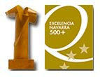

Proyecto cuatrovientos
El Proyecto Cuatrovientos establece en su Misión que, Cuatrovientos es un Centro Integrado Privado de Formación Profesional gestionado por una cooperativa de profesionales, cuyo fin es la formación integral de personas capaces de insertarse en el mundo socio-laboral a través de:
Un modelo educativo basado en la innovación, el emprendimiento, la internacionalización, y el compromiso, así como la igualdad de oportunidades (comprende la equidad, la inclusión y la no discriminación).
Un modelo de gestión basado en la mejora continua y en los principios cooperativos.
La participación y colaboración de la Comunidad Educativa (alumnado, ex alumnado, familias, empresas, personal del centro y entidades colaboradoras).